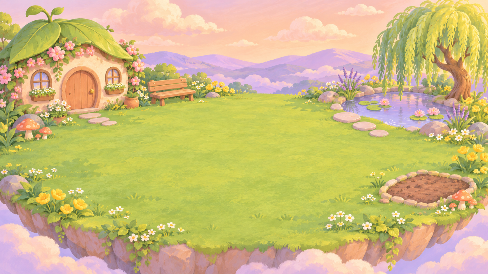

BẠN CÓ THỂ ĐI THEO NHỊP CỦA MÌNH
Một chút dịu dàng
cho hôm nay.
Chơi nhẹ. Nghe chuyện. Chia sẻ khi bạn muốn.
Hôm nay bạn thấy thế nào? Chọn cũng được, bỏ qua cũng được.

GÓC VƯỜN NHỎ CỦA BẠN
MÂY
Chạm Mây một cái nè ↗Chào bạn. Mình chọn một điều dễ chịu nhé?
Chạm một bong bóng, để nó bay đi.